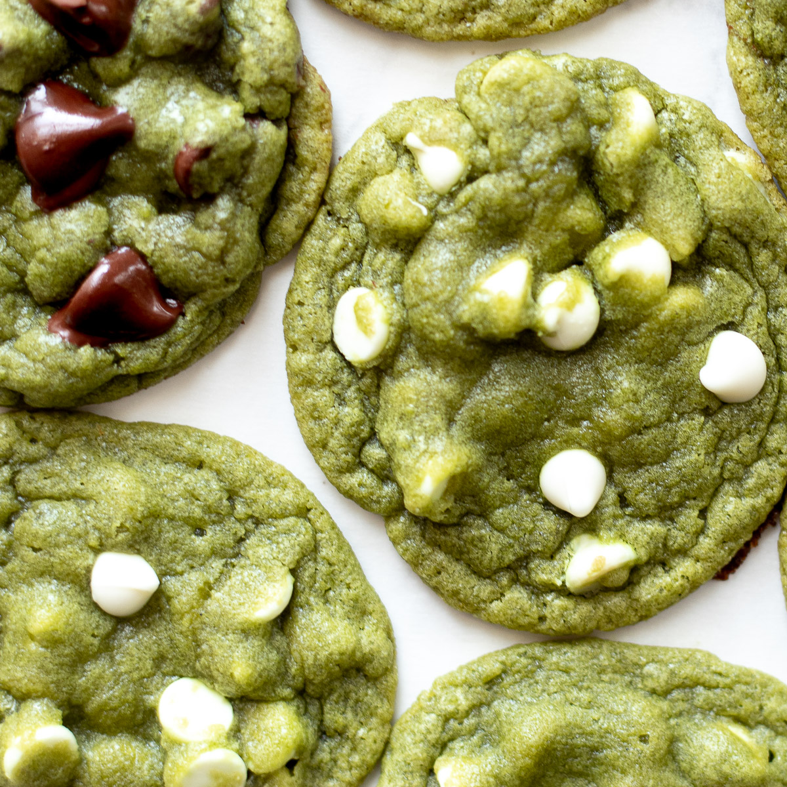

Matcha Chocolate Chip Cookies

SOFT MATCHA CHOCOLATE CHIP COOKIES RECIPE
If you've ever baked with matcha before, you know it adds such a deliciously complex flavor to sweet treats, and these matcha cookies are a perfect example! They bake up nice and chewy, with crispy edges and lots of chocolate chips, and they can be made with your choice of white chocolate chips, semisweet chips, or dark chocolate! They're a delicious twist on classic chocolate chip cookies!
Matcha Cookies Ingredients
- 1/2 Cup Melted Butter
- 2/3 Cup Granulated Sugar
- 1/2 Cup Brown Sugar
- 1 Egg
- 1/2 Teaspoon Vanilla Extract
- 1 1/3 Cup All Purpose Flour
- 2 Tablespoon Corn Starch
- 1 Tablespoon Matcha Powder
- 1/2 Teaspoon Baking Soda
- 3/4 CupChocolate Chips
Steps
- In a medium bowl, whisk together flour, cornstarch, baking soda, and matcha until well combined. Set aside.
- In a large bowl, whisk together melted butter, sugars, egg, and vanilla until smooth.
- Gradually mix dry ingredients into wet ingredients until combined into a dough. Fold in chocolate chips.
- Cover bowl with plastic wrap and place in the refrigerator to chill at least 30 minutes.
- When ready to bake, preheat oven to 350°F and line a large baking sheet with a silicone baking liner or parchment paper.
- Use a small cookie scoop to scoop dough out onto lined cookie sheet, 2 inches apart.
- Bake in preheated oven for 10-12 minutes, or until edges of cookies are golden brown. Centers will still look underdone just as they come out of the oven -- the cookies will continue to cook a bit as they cool. Sprinkle with sea salt, if desired.